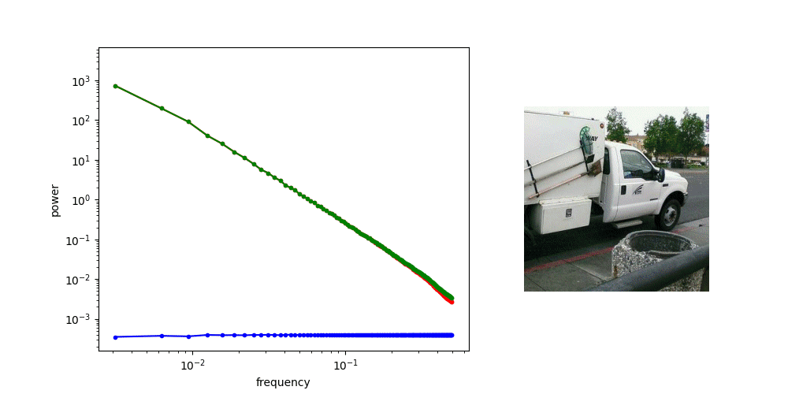
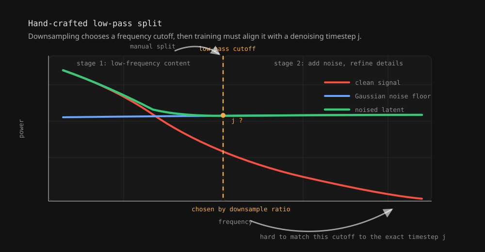
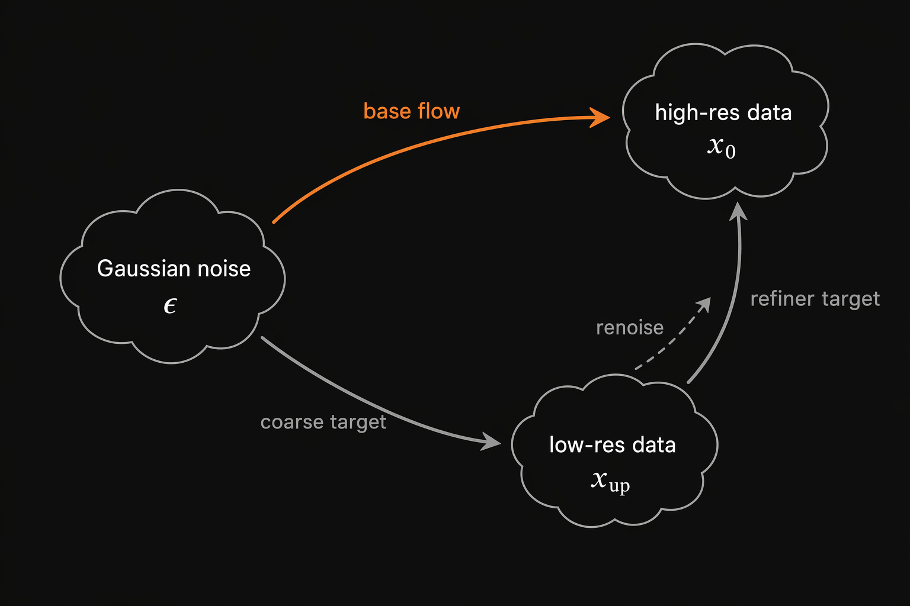
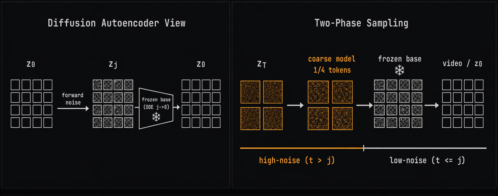
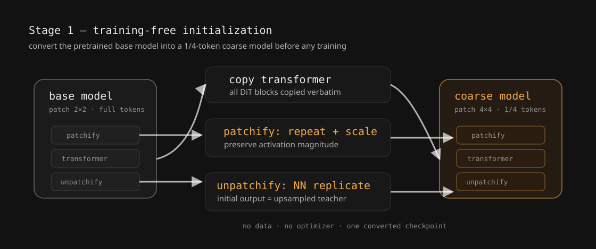
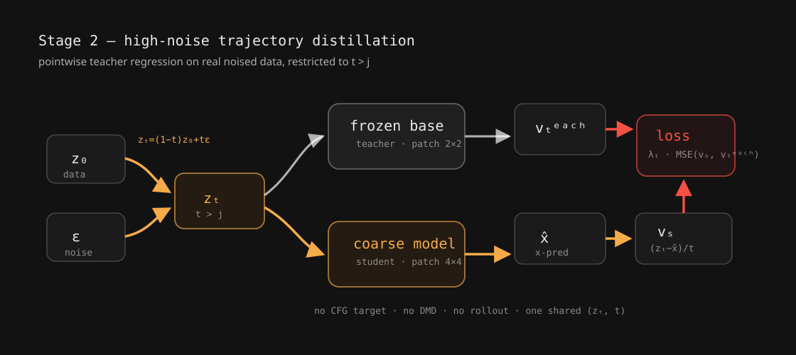
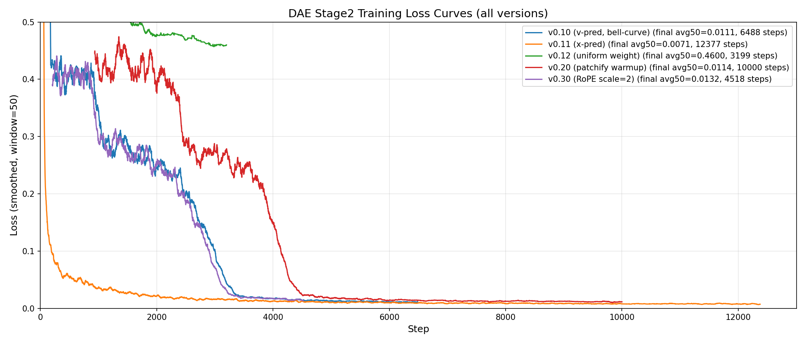
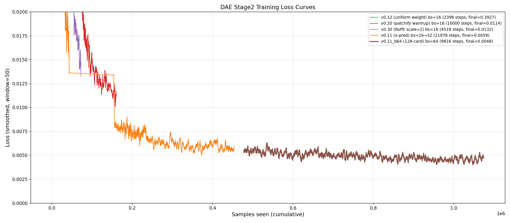

Diffusion Autoencoding for Fast Video Sampling
A compact post-training recipe: generate only to an intermediate noisy latent, then let the frozen base model decode the details.
~1.7× end-to-end speedup · ~5× faster high-noise steps
Motivation[#]
Video diffusion sampling pays a per-step cost proportional to the token count. Existing token-reduction routes fall into two camps. One trains a higher-compression VAE [1], but this creates a new latent space that is hard to adapt to an existing pretrained model, and it uses the same token budget for every noise level. The other notices the coarse-to-fine nature of denoising and spends fewer tokens only at high noise, but usually by introducing a hand-designed coarse space — spatial/temporal downsampling or a semantic encoder [2][3].
Those coarse spaces add extra training machinery, and can become the new ceiling on model capacity. This project takes a simpler view: a well-trained diffusion model has already learned a model-native level-of-detail (LOD) representation, where details are added progressively from high noise to low noise. Can we generate only to an intermediate LOD state with fewer tokens, and let the frozen base model finish the details?
The problem: hard cutoffs[#]
Diffusion denoising is not an arbitrary sequence of refinements. As Sander Dieleman illustrates in “Diffusion is spectral autoregression”, adding Gaussian noise is like raising a waterline over the frequency spectrum: high-frequency details disappear first, while low-frequency structure remains visible longer. Running the process backward, diffusion models recover structure first and details later.

This gives every noise level a natural level-of-detail (LOD) interpretation. Prior multi-scale methods often implement this LOD by hand — by downsampling in pixel/latent space. This is equivalent to using a low-pass filter to define the boundary between two stages.

A fixed resolution switch (e.g., 320p → 480p) turns the spectral-autoregression intuition into a hard, global cutoff. But this view is only an approximation: the base model’s actual intermediate representation does not have to align with a hand-crafted frequency boundary.

We saw this mismatch in our own early prototype of a low-resolution-to-high-resolution two-stage pipeline. For samples where the face occupies only a small region, the low-resolution stage can under-resolve mouth motion and choose the wrong movement. In the case below, the high-resolution refiner inherits that motion instead of rewriting it.
Key idea: the model already has an LOD representation[#]
Our view is simpler: a pretrained diffusion model already carries a model-native LOD representation — as noise decreases, its latent trajectory progressively adds detail. We access this representation by treating the frozen base model as a diffusion autoencoder (DAE):
- Encode: forward-noise a clean latent to an intermediate level
j→ zj, the model's own coarse code; - Decode: integrate the model's ODE from
jback to 0 — the round trip loses little perceptual quality, for any chosenj.
A generator is therefore done once it produces a valid zj. The frozen base model finishes the details, in its own latent space, with no resampler.

We started with the simplest possible approach: use the base model itself as a training-free encode–decode system. Forward-noise a real video latent to zj, then let the frozen base model denoise it back. Visually, the reconstruction is almost lossless.
Method: a three-stage post-training recipe[#]
The coarse model is the same DiT with one change: patchify/unpatchify use a 2×-larger spatial patch, so the high-noise phase runs with 1/4 of the tokens. Latent space, conditioning, and sampler stay unchanged.
The objective. A zj is “valid” when the coarse model's marginal at level j matches the base model's own marginal there — the frozen decoder then never leaves its familiar territory. Since both sides start from the same Gaussian zT, this reduces to one thing: align the two velocity fields on t ∈ [j, T]. Matching velocities everywhere transports the same zT distribution to the same zj distribution; equivalently, given the flow-matching field on each side, matching the zj marginal is matching those two fields over the region. The loss is therefore just per-step regression onto the frozen teacher's velocity on the high-noise interval.
Stage 1 — training-free initialization
The goal is a strong starting point that reuses the base model as much as possible. Transformer weights are copied verbatim; only the patch-size-dependent patchify/unpatchify layers cannot be reused directly, so we tile and rescale them — unpatchify is tiled so the initial output is a nearest-neighbour upsample of the base prediction. The coarse model starts as the base model looking at a blurrier picture.

Stage 2 — off-policy trajectory distillation
Noise real data to t > j, run the frozen base model once, and regress the coarse model onto the teacher velocity. The coarse model predicts the clean latent, then converts it to velocity; this is much easier than direct velocity prediction at large patch sizes.

Why not simply retrain with flow matching? Because the base model already encodes a high-quality solution trajectory. Regression copies that answer directly, with a deterministic low-variance target.
Stage 3 — on-policy trajectory distillation
Same pointwise loss, but the latents no longer come from noised real data. Starting from Gaussian zT, the coarse model rolls itself out step by step — zT-1, zT-2, …, zj+1 — and each on-policy point is regressed onto the frozen teacher's velocity. This aligns the distillation with the trajectory the coarse model actually follows at inference, rather than the data-noised trajectory it never visits.
Experiments[#]
Prediction target: x-pred vs. v-pred
The coarse model regresses the clean latent (x-prediction) rather than the velocity (v-prediction). This choice is not cosmetic at large patches. With a 4×4 patch, a single token spans 16 × 4 × 4 = 256 latent dimensions, and predicting a high-dimensional noised quantity becomes fundamentally hard: clean data lies on a low-dimensional manifold while the velocity/noise target does not, so an under-capacity network struggles to fit it [5].

x-prediction converges far faster, and the gap carries over to samples: at this patch size x-pred is visually far stronger than v-pred.
Data efficiency
How much data does the coarse model need to converge? For context on the base model: it is trained in two phases — a text-to-video (t2v) pretraining phase, then a text/image/audio-to-video (tia2v) mid-training phase. Both data diversity and volume are larger in pretraining than in mid-training; mid-training uses roughly 40M samples, while the pretraining budget is not known to us. The coarse model reuses the base model's mid-training data.
Plotting the coarse model's loss against samples seen, it begins to converge after about 1M samples, and generation quality shows no visible improvement beyond about 2M samples. That 2M is roughly 1/20 of the 40M mid-training set — so the recipe is fairly data-efficient.

Setup
TODO: base model, data, patch size / handoff j, schedule, training budget, evaluation protocol.
Efficiency
We time a single denoising step — coarse vs. base — at CP=1. The coarse model runs on 1/4 of the tokens and is ~5.17× faster per step, above the 4× token ratio.
| CP=1, per step | Coarse | Base | Speedup |
|---|---|---|---|
| Steady-state latency | 2439 ms | 12609 ms | 5.17× |
| Flash-attention / call | 1.81 ms | 27.80 ms | 15.4× |
| Attention share of step | 20.8% | 36.5% | — |
| Linear/FFN share of step | 33.1% | 27.5% | — |
The super-linear gain comes from attention: it is 36.5% of the base step and runs ~15× faster at 1/4 tokens (near the theoretical 16×), so cutting that dominant quadratic cost more than offsets the 4× token reduction.
Exposure bias
Does the off-policy Stage 2 model stay on-trajectory at inference? We take the Stage-2 model, run coarse–base inference on 95 test-set samples, and at each of the 15 coarse steps measure the MSE between the coarse prediction and the base model's velocity at the same state. The error grows step by step — from ~0.006 to ~0.02 — the signature of exposure bias: the coarse model drifts onto states that its data-noised training never covered. This is exactly what motivates the on-policy stage. After on-policy distillation (Stage 3), the per-step MSE stays flat at ~0.006 across the whole trajectory.
| MSE vs. base velocity | 1 | 2 | 3 | 4 | 5 | 6 | 7 | 8 | 9 | 10 | 11 | 12 | 13 | 14 | 15 |
|---|---|---|---|---|---|---|---|---|---|---|---|---|---|---|---|
| Stage 2 (off-policy) | 0.0061 | 0.0068 | 0.0079 | 0.0091 | 0.0103 | 0.0118 | 0.0129 | 0.0141 | 0.0152 | 0.0164 | 0.0173 | 0.0182 | 0.0189 | 0.0195 | 0.0201 |
| + Stage 3 (on-policy) | 0.0059 | 0.0061 | 0.0058 | 0.0062 | 0.0060 | 0.0057 | 0.0063 | 0.0059 | 0.0061 | 0.0060 | 0.0058 | 0.0062 | 0.0060 | 0.0059 | 0.0061 |
Video comparisons
DAE (left) vs. Baseline (right). Each clip contains both labeled outputs, played together. Click play to watch, unmute to hear audio, or use fullscreen for a closer look.
Next steps[#]
So far we only cut the per-step cost of the high-noise phase; the coarse model still takes the same number of steps as the base model over that interval. The natural next step is to also cut the number of steps by integrating few-step distillation (DMD) on top of the coarse model.
This is the same zj distribution-matching objective from a different angle: a learned fake score lets the coarse model take large jumps while its zj marginal stays on the base model's. Trajectory distillation (Stages 2–3) is a strong, stable warm-start; DMD then compresses the high-noise phase into a handful of steps, compounding with the 1/4-token saving for a further end-to-end speedup.
References[#]
[1] Deep Compression Autoencoder for Efficient High-Resolution Diffusion Models. arXiv:2410.10733.
[2] Pyramidal Flow Matching for Efficient Video Generative Modeling. arXiv:2410.05954.
[3] Latent Forcing: Reordering the Diffusion Trajectory for Pixel-Space Image Generation. arXiv:2602.11401.
[4] LongCat-Video Technical Report. arXiv:2510.22200.
[5] Back to Basics: Let Denoising Generative Models Denoise (JiT). arXiv:2511.13720.